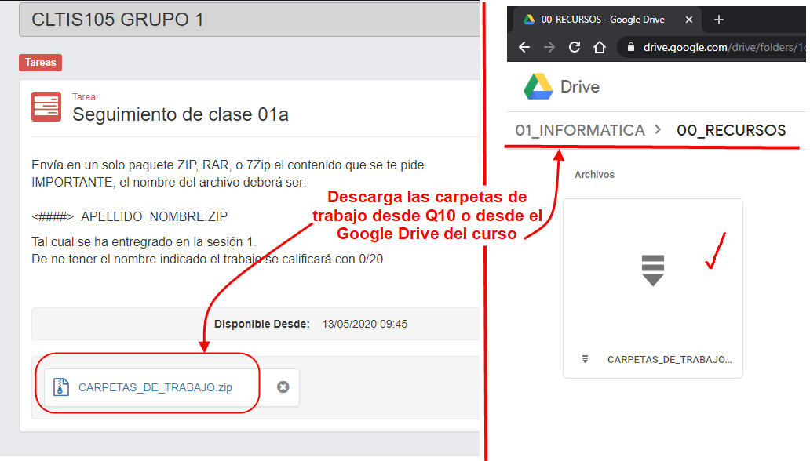

Cómo descargo la carpeta de trabajo
Nuestro curso es prácticamente un taller donde, en cada sesión, tendrás que producir algo relevante para conseguir nuestro objetivo final.
Tus trabajos tendrán que seguir ciertas directivas y protocolos. Sólo así podrás tener una retro-alimentación rápida de tu progreso.
Primero tendrás que descargar el documento Carpetas_de_Trabajo.zip que encontrarás
- En el Q10 o
- En el Google Drive del curso:

Descárgalo y llévalo a Escritorio de tu computador.